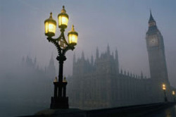
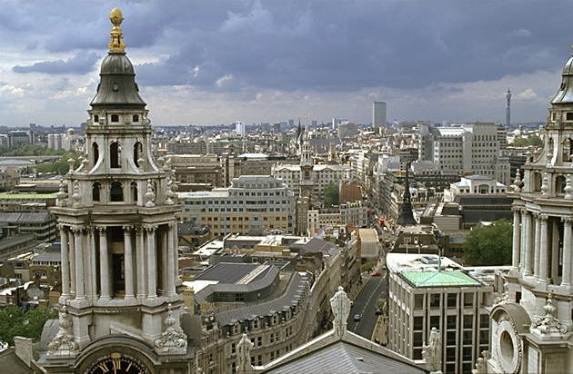
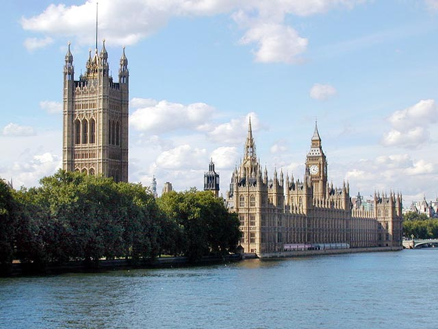
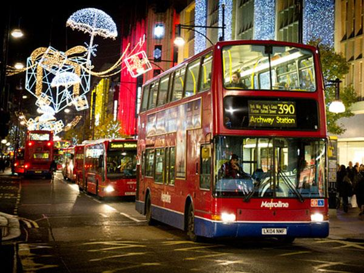

"Если Вы устали от Лондона, то Вы устали жить, потому что здесь есть всё, что можно ждать от жизни" - так писал Сэмьюэль Джонсон в 1777 году 
Лондон один из самых больших городов мира, а также один из древнейших городов Европы. Столица Великобритании является очень популярным городом для туристов не только в своей стране, но и Европе в целом; в Лондоне есть множество достопримечательностей, многие из которых внесены в Список Всемирного Наследия ЮНЕСКО. Всем известны такие названия, как Биг Бен, Тауэр, Вестминстер, Букингемский дворец, Трафальгарская площадь и т.д. Мост Тауэр – это мост с объединенной подвижной фермой в Лондоне, в Англии через реку Темза. Именно близкое расположение к Лондонскому Тауэру, дало этому мосту название. Тауэр стал символом Лондона, также как Биг Бен или Здание Парламента Великобритании.
 Вестминстерское аббатство, один из символов не только Лондона, но и Великобритании в целом, а также аббатство является символом английской государственности и монархии. В аббатстве нашли свое последнее пристанище не только многие английские монархи, но и выдающиеся личности Королевства – ученые, поэты, врачи и генералы.
История Лондона
История Лондона начинается с высадки римлян на Британские острова в 43 году н.э. Для того, чтобы переправится на другой берег Темзы, войска под предводительством Aulus Plautius возвели мост через реку. Римское поселение на северном берегу Темзы, названное Londinium, становится центром торговли. Около 200 года город был обнесен крепостной стеной, которая почти на тысячелетие определила его размеры. После падения Римской империи Лондон пришел в упадок - население резко уменьшилось, здания разрушались. Только в начале VII века город начинает возрождаться. Примерно в 604 году возводится первый собор Св.Павла (St. Paul's Cathedral). В IX веке Лондон, вновь процветающий центр торговли, становится добычей Викингов. До XI века городом владеют то Норманны, то Викинги, то Англичане. В середине XI века король Эдуард Исповедник (Edward the Confessor) утверждает англосаксонское владение над Лондоном.

Средневековую историю Лондона можно начать с 1066 года, когда Вильгельм Завоеватель (William the Conqueror) был коронован королем Англии в только что построенном Вестминстерском аббатстве (Westminster Abbey). Благодаря ему Лондон становится крупнейшим и богатейшим городом королевства. В 1176 возводится первый каменный мост Лондона (London Bridge), который был единственным в городе до 1739. Ричард I предоставляет Лондону право на самоуправление в 1191 году, и на следующий год избирается первый мер города. В XIII веке перестраиваются Вестминстерское аббатство и собор св. Павла.
Во время правления Елизаветы I население Лондона за 40 лет удваивается и к 1600 году достигает 200 тысяч. В 1560 году основывается Королевская биржа (Royal Exchange), в 1599 был построен театр Глобус (The Globe Theatre), в котором ставились большинство пьес Шекспира. В 1631 году архитектор Айниго Джонс (Inigo Jones) создает Covent Garden piazza, первый квартал, созданный по специальному плану. Из его работ необходимо упомянуть Queen's House (Greenwich), Banqueting Hall (Whitehall) и Queen's Chapel. Но в 1666 году практически все здания Лондона уничтожает великий пожар (Great Fire).
В XIX веке население Лондона возрастает с 1 миллиона в начале до 6 миллионов в конце века. Викторианский Лондон - самый настоящий город контрастов: растут новые дома промышленных баронов и огромные кварталы городской бедноты. Одним из главных, но незаметных сооружений того времени - городская канализация - около 2100 километров тоннелей и труб для вывода нечистот из города. Благодаря этому практически прекратились вспышки холеры и резко уменьшилась смертность. В 1829 году Сер Роберт Пил (Sir Robert Peel) организует городскую полицию, и именно в его честь полицейских называют Бобби.
Первую городскую железную дорогу проложили от London Bridge до Greenwich в 1836. Затем были построены вокзалы Euston (1837), Paddington (1838), Fenchurch Street (1841), Waterloo (1848) и King's Cross (1850). В 1863 году уже была открыта первая линия Лондонского метро, соединившая Paddington и Farringdon Road. Проект оказался очень удачным, и строительство метро в Лондоне стало бурно развиваться. А в 1906 году по линиям Лондонского метро пошли первые электрические поезда. Первые автобусы вышли на улицы Лондона в 1904 году.
В 1830 году сносятся старые постройки у Букингемского дворца и создается Трафальгарская площадь (Trafalgar Square), на которой через два года возводится Национальная галлерея (National Gallery). В 1834 году пожар уничтожил здания Парламента и Вестминстерского дворца. На их месте построено современное здание Парламента по проекту Charles Barry и A.W. Pugin. Знаменитая башня с часами, известная как Биг Бен (Big Ben), была построена в 1859 году. Происхождение названия не известно, но на самом деле Биг Бен - это не башня и не часы, а колокол часов. В начале XX века было построено много новых крупных магазинов, театров, шикарных отелей, большая часть из которых в районе Вест Энд (West End). Отель Ritz открыт в 1906, новый магазин Knightsbridge - в 1905, а Selfridges - в 1907 году. Большое количество зданий Викторианского Лондона было разрушено в результате немецких бомбежек во время второй мировой войны. Послевоенный период отмечен огромным притоком иммигрантов из разных стран бывшей британской империи (British Empire). Переселенцы из Гонконга селились в Сохо (Soho), иммигранты с Карибских островов - в Ноттинг хилле (Notting Hill), сикхи - в Саутхоле (Southall), киприоты - в Финсбери (Finsbury). В 1946 году первый рейс совершен из нового аэропорта Хитроу (Heathrow). Первые двухэтажные красные автобусы (double-decker) вышли на лондонские улицы в 1956 году. За 10 лет с 1972 до 1982 года на берегу Темзы был построен Thames Barrier, защищающий город от разлива реки. Последним большим проектом XX века и второго тысячелетия стал Миллениум Доум (Millennium Dome), выставочный центр, открытый 1 января 2000 года.